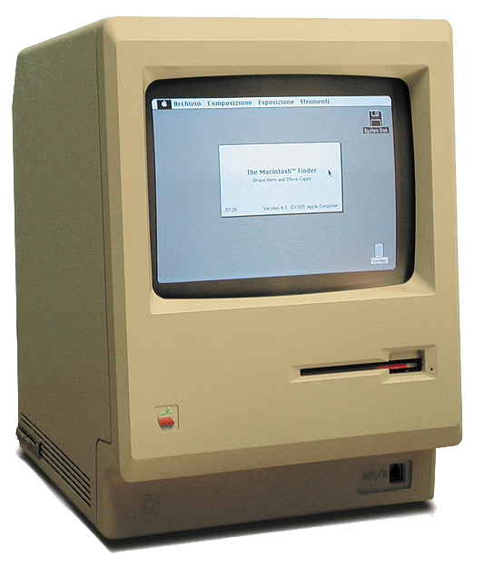

| Umenie | Vzdelanie | Šport | Zábava | Domácnosť | Zdravotníctvo |
|
Informatika je veda, ktorá sa zaoberá automatickým spracovaním informácií pomocou počítačov. Pôvodne vznikla na základe matematiky a programovania, no dnes sa využíva takmer vo všetkých oblastiach ľudskej činnosti. Technológie dnes menia fungovanie väčšiny odvetví. Informatika sa využíva v umení, zdravotníctve, školstve, športe. Vo všetkých týchto oblastiach plní rovnakú funkciu: umožňuje rýchlo, presne a bezpečne spracovávať veľké množstvo dát. Tým zefektívňuje prácu a umožňuje zavádzanie nových postupov do praxe. |
 |